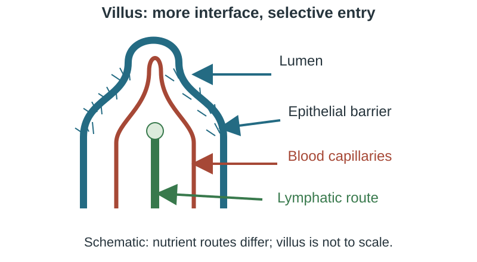
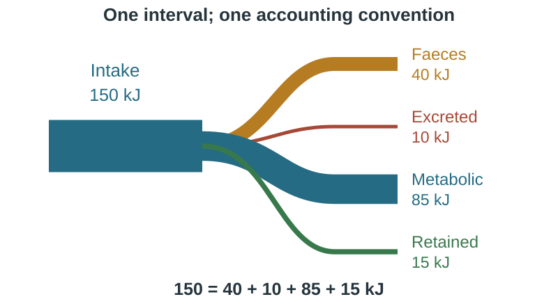
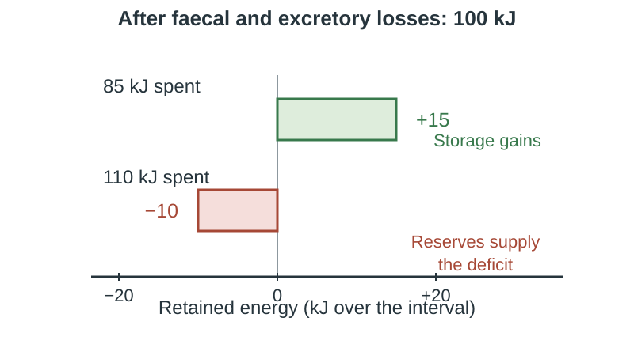
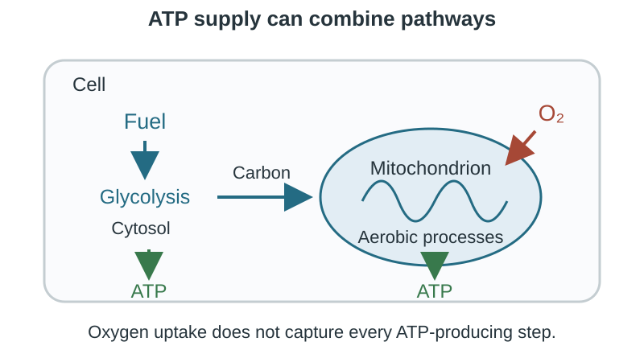

A2 — Nutrition, energy and temperature
Week 2 — What an animal does with its food
About this lecture
In A1 we saw how a body brings O₂ and food within reach of every cell. Today we ask what the cells do with them. A 25 g mouse eats about 4 g of food (roughly 55 kJ) every day. A lizard of the same mass, at the same body temperature, lives on about a tenth of that. Where does the mouse’s food energy go, and why does it need so much more?
- From food to fuel: ingestion, digestion and absorption, and the enzymes and surfaces that do the work.
- Plant food: why herbivores need microbes, and where they keep them.
- Energy accounting: the energy budget, and energy versus power.
- Turning fuel into ATP: aerobic and anaerobic supply, and how we measure metabolic rate from O₂ consumption.
- Temperature: Q_{10}, ectotherms and endotherms, heat exchange and the cost of keeping warm.
From food to fuel: five processes
- Ingestion: taking food into the gut.
- Digestion: breaking it into absorbable molecules, mechanically and chemically.
- Absorption: uptake across the gut epithelium into blood or lymph.
- Egestion: eliminating unabsorbed material as faeces.
- Excretion: eliminating metabolic wastes made inside the body, such as urea in urine.
Food in the gut lumen is still outside the body (A1).

Chemical digestion is hydrolysis
| Enzyme | Source | Substrate | Products |
|---|---|---|---|
| Salivary and pancreatic amylase | Salivary glands, pancreas | Starch | Maltose and short oligosaccharides |
| Pepsin | Stomach (chief cells), works at pH ~2 | Proteins | Peptides |
| Trypsin | Pancreas | Proteins and peptides | Smaller peptides |
| Pancreatic lipase | Pancreas | Triglycerides | Fatty acids and monoglycerides |
| Brush-border enzymes (e.g. maltase, peptidases) | Small-intestine epithelium | Disaccharides, small peptides | Glucose, amino acids |
- Each reaction splits a bond by adding water: hydrolysis.
- Bile (from the liver) contains no enzymes. Bile salts emulsify fat into small droplets, increasing the surface area for lipase.
So what route does one meal take through these enzymes?
Following a starch meal
- Mouth: salivary amylase begins to hydrolyse starch.
- Small intestine: pancreatic amylase continues, giving maltose.
- Brush border: maltase hydrolyses maltose to glucose.
- Apical membrane: glucose enters the enterocyte, co-transported with Na⁺ (SGLT1).
- Basolateral membrane: glucose leaves the cell into the blood (GLUT2).
- Hepatic portal vein: blood from the gut goes first to the liver.
Steps 4 and 5 use different transporters on the two sides of the cell: the apical–basal polarity from A1.
Absorption needs a large surface. How large is it?
The absorptive surface
The small intestine multiplies its area at three scales:
- Circular folds of the wall (×3).
- Villi, finger-like projections of the mucosa (×10).
- Microvilli on each epithelial cell, the brush border (×20).
Two exit routes from a villus:
- Blood capillaries: glucose, amino acids.
- Lacteal (lymph): fats, repackaged as chylomicrons, too large for capillaries.

Plant food: the cellulose problem
- Plant cell walls are mostly cellulose. Vertebrates make no cellulase, so they cannot hydrolyse it themselves.
- Symbiotic microbes (bacteria, protists, fungi) ferment cellulose in a chamber of the gut.
- The host absorbs the microbial end products: short-chain (volatile) fatty acids, mainly acetate, propionate and butyrate.
- In a cow these supply about 70 % of the animal’s energy.
- The microbes themselves are a protein source if the host can digest them.
- Fermentation is slow: the food must be retained for hours to days.
So where along the gut should the fermentation chamber be?
Foregut and hindgut fermenters
Foregut (before the small intestine): cow, sheep, deer (ruminants), kangaroo.
- Ruminant stomach: rumen, reticulum, omasum, abomasum (the true stomach).
- Microbes washed out are digested in the small intestine.
Hindgut (after the small intestine): horse, rabbit, many rodents.
- Fermentation in the caecum and colon.
- Microbial protein is mostly lost in faeces.
- Rabbits recover it by caecotrophy: eating soft faeces from the caecum.

The energy budget
Over one stated interval:
E_{\rm ingested}=E_{\rm faeces}+E_{\rm excreted}+E_{\rm metabolic}+E_{\rm retained}
- Faeces: energy never absorbed (egestion).
- Excreted: chemical energy in urine, mainly urea.
- Metabolic: energy used and released as heat.
- Retained: new tissue, fat stores, offspring.
- Absorbed =E_{\rm ingested}-E_{\rm faeces}.

Retained energy can be negative
Intake 150 kJ, faeces 40 kJ, excreted 10 kJ: 100 kJ available for metabolism and retention.
| Metabolic | Retained |
|---|---|
| 85 kJ | +15 kJ |
| 110 kJ | −10 kJ |
- Positive: the animal grows or stores fat.
- Negative: it draws on stores (fat, glycogen) and loses body energy.

Budgets are in joules per day; metabolic rates are usually in watts. How do they compare?
Energy is not power
- Energy is an amount: joules (J).
- Power is a rate: J s⁻¹ = watts (W).
- To compare, convert to the same time unit. 1 day = 86 400 s.
Example: a human uses about 8 400 kJ day⁻¹.
\frac{8\,400\,000\ \text{J}}{86\,400\ \text{s}} \approx 97\ \text{W}
A person is a ~100 W heater, all day.

Turning fuel into ATP
| Anaerobic glycolysis | Aerobic metabolism | |
|---|---|---|
| Where | Cytosol | Cytosol, then mitochondria (citric acid cycle, electron transport chain) |
| Needs O₂? | No | Yes: final electron acceptor |
| End products | Lactate | CO₂ + H₂O |
| ATP per glucose | 2 | ~30 |
| Rate | Fast, short-lived | Slower, sustainable |
- Aerobic metabolism gets ~15× more ATP from each glucose.
- Anaerobic glycolysis makes ATP fast, but lactate accumulates.

So which does a running animal use?
A sprint uses three ATP sources
| Source | O₂ used? | Time it can sustain hard work |
|---|---|---|
| Phosphocreatine (PCr + ADP → creatine + ATP) | No | ~10 s |
| Anaerobic glycolysis to lactate | No | ~1–2 min |
| Aerobic metabolism | Yes | Hours (fuel permitting) |
- In a sprint, much of the ATP comes from the first two.
- O₂ consumption measures only aerobic ATP production, so during a sprint it underestimates total ATP use.
- After the sprint, O₂ consumption stays raised while PCr is rebuilt and lactate is cleared (excess post-exercise O₂ consumption).
Even so, O₂ consumption is the standard measure of metabolic rate. How is it measured?
Measuring metabolic rate: respirometry
An animal sits in a closed chamber of water; a sensor records the fall in O₂ concentration.
| Step | Calculation | Result |
|---|---|---|
| O₂ lost from 0.10 L | 0.10 L × 0.40 mg L⁻¹ | 0.040 mg in 10 min |
| Apparent rate | 0.040 mg / 10 min | 0.0040 mg min⁻¹ |
| Subtract blank (empty chamber: microbes, sensor drift) | 0.0040 − 0.0010 | 0.0030 mg min⁻¹ |
| Mass-specific rate (animal 1.5 g) | 0.0030 / 1.5 | 0.0020 mg min⁻¹ g⁻¹ |
- Concentration × volume = amount. A concentration change alone is not a rate.
- The blank removes O₂ use that is not the animal’s.
- Dividing by mass lets animals of different size be compared.
Comparing temperatures: what is a replicate?
Six animals of 1.5 g, each in its own chamber, 5 sensor readings each:
| Temperature | Rate of each animal (mg min⁻¹ g⁻¹) | Mean |
|---|---|---|
| 15 °C | A: 0.0018 · B: 0.0020 · C: 0.0022 | 0.0020 |
| 25 °C | D: 0.0046 · E: 0.0050 · F: 0.0054 | 0.0050 |
- The independent replicate is the animal: n = 3 per temperature, not 15. Repeated readings from one animal are not new animals.
- Keep other conditions equal: activity, feeding state, time of day, acclimation.
The rate rose 2.5-fold over 10 °C. How do we describe that?
Temperature and rate: Q_{10}
Q_{10}=\left(\frac{R_2}{R_1}\right)^{10/(T_2-T_1)}
Q_{10} is the factor by which a rate changes over 10 °C.
| Example | Calculation | Result |
|---|---|---|
| Previous slide, 15 → 25 °C | (0.0050/0.0020)^{10/10} | Q_{10}=2.5 |
| Rate 1.5 → 6.0, 5 → 25 °C | (6.0/1.5)^{10/20}=4^{0.5} | Q_{10}=2.0 |
| Predict: rate 3.0 at 15 °C, Q_{10}=2.5 | 3.0\times2.5 | 7.5 at 25 °C |
- Most biological rates have Q_{10} of 2–3.
- Q_{10} describes only the measured range. At higher temperatures rates level off and then fall as proteins and membranes are damaged.
So does every animal’s metabolic rate simply follow the temperature around it?
Heat source and temperature stability
| Body temperature varies (poikilotherm) | Body temperature stable (homeotherm) | |
|---|---|---|
| Heat mainly external (ectotherm) | Frog, most insects | Deep-sea fish (stable surroundings) |
| Heat mainly metabolic (endotherm) | Hibernating ground squirrel | Mouse, human, most birds |
- Ectotherm / endotherm: the source of body heat.
- Poikilotherm / homeotherm: how much body temperature varies.
- Ectotherms can regulate behaviourally: a lizard basks, shelters and changes posture to hold 35 °C during the day.
- An endotherm’s resting metabolic rate is about 5–10× that of an ectotherm of the same mass and body temperature.
How does heat enter and leave an animal?
Four routes of heat exchange
| Route | Mechanism | Example |
|---|---|---|
| Radiation | Electromagnetic (infrared, sunlight); no contact needed | A lizard basks in the sun |
| Conduction | Direct contact with a solid or still fluid | A snake lies on a warm rock |
| Convection | Heat carried by moving air or water | Wind cools a bird’s body surface |
| Evaporation | Water changes to vapour, about 2.4 kJ per g | A dog pants; a human sweats |
- The first three can add or remove heat; evaporation only removes it.
- Body temperature is stable when heat gained (metabolism + environment) equals heat lost.
For an endotherm, how much heat must metabolism supply?
The thermoneutral zone
| Ambient temperature | Region | Resting metabolic rate |
|---|---|---|
| Below the lower critical temperature | Cold | Rises as ambient falls: more heat must be produced |
| Between lower and upper critical temperatures | Thermoneutral zone | Minimal and constant: insulation and blood flow adjust |
| Above the upper critical temperature | Heat | Rises: active cooling (panting, sweating) costs energy and water |
- Unclothed human: thermoneutral zone about 28–32 °C.
- Arctic fox: lower critical temperature about −40 °C, thanks to its fur.
- Below the lower critical temperature, heat loss rises in proportion to (body − ambient temperature), and metabolism must match it.
So what can a mammal do to save heat or make more of it?
Staying warm in the cold
Reduce heat loss
- Insulation: thicker fur, feathers or fat; piloerection traps more air.
- Vasoconstriction of skin vessels: less warm blood near the surface.
- Countercurrent heat exchange in limbs: arterial blood warms the venous blood returning beside it, so feet run cold and little heat is lost.
- Posture and huddling: curling up reduces exposed surface (A1’s A/V).
Increase heat production
- Shivering: muscle contraction with no movement; the ATP use becomes heat.
- Non-shivering thermogenesis in brown adipose tissue: the protein UCP1 lets protons leak back into the mitochondria, so fuel is oxidised without making ATP and the energy is released as heat.
Back to the opening problem: mouse versus lizard
Mouse (endotherm)
- Body temperature ~37 °C in any weather.
- Active at night and in winter.
- Pays with a high metabolic rate: food intake ~55 kJ per day.
- Small size, large A/V: loses heat fast, so its costs per gram are high.
Lizard (ectotherm)
- Body temperature set by basking and shelter.
- Active only when it can warm up.
- Metabolic rate rises with temperature (Q_{10} ≈ 2–3) and falls when cool.
- Needs about a tenth of the food.
Both rising curves look alike, but for different reasons: the mouse in the cold defends its body temperature; the warming lizard speeds up its reactions.
Both still need O₂ delivered to their mitochondria. That is A3.
Summary
| Concept | Key fact |
|---|---|
| Five processes | ingestion, digestion, absorption, egestion (faeces), excretion (metabolic waste) |
| Digestion | enzymatic hydrolysis; amylase, pepsin, trypsin, lipase; bile emulsifies |
| Absorptive surface | folds, villi, microvilli; sugars and amino acids → blood, fats → lacteals |
| Fermentation | microbes digest cellulose → short-chain fatty acids; foregut (cow) vs hindgut (horse) |
| Energy budget | ingested = faeces + excreted + metabolic + retained, over one interval |
| Energy vs power | J vs W = J s⁻¹; 1 day = 86 400 s |
| ATP supply | anaerobic: 2 ATP/glucose, lactate; aerobic: ~30 ATP/glucose, needs O₂ |
| Respirometry | O₂ use = Δconcentration × volume / time − blank; replicate = animal |
| Q_{10} | (R_2/R_1)^{10/(T_2-T_1)}; typically 2–3; valid only in the measured range |
| Thermal terms | ecto/endotherm = heat source; poikilo/homeotherm = temperature variation |
| Thermoneutral zone | minimal metabolism; below lower critical temperature, metabolism rises |
Next (A3 — Gas exchange and circulation): follow the O₂ that the respirometer measured, from the air or water to the mitochondrion: exchange surfaces, haemoglobin and the heart.